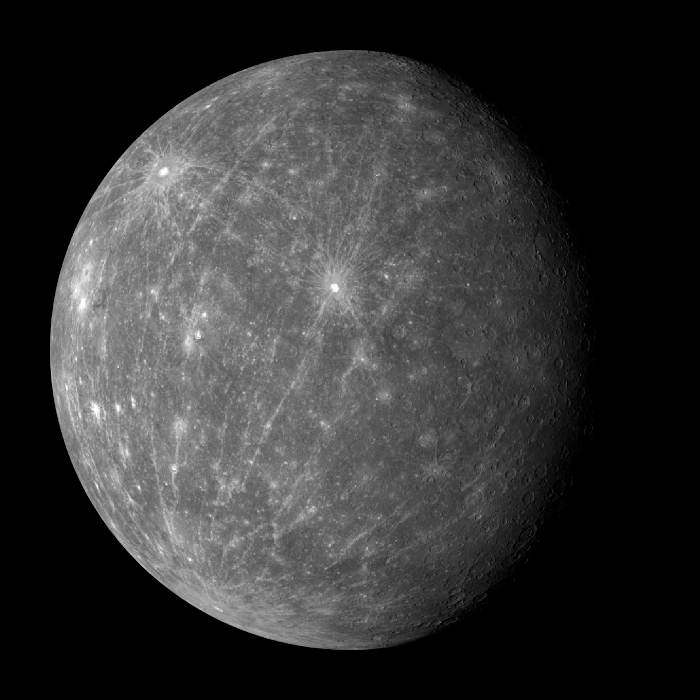

Like Venus, Mercury orbits the Sun within Earth's orbit as an inferior planet, and its apparent distance from the Sun as viewed from Earth never exceeds 28°. This proximity to the Sun means the planet can only be seen near the western horizon after sunset or eastern horizon before sunrise, usually in twilight. At this time, it may appear as a bright star-like object, but is often far more difficult to observe than Venus. The planet telescopically displays the complete range of phases, similar to Venus and the Moon, as it moves in its inner orbit relative to Earth, which recurs over its synodic period of approximately 116 days.
Mercury rotates in a way that is unique in the Solar System. It is tidally locked with the Sun in a 3:2 spin-orbit resonance, meaning that relative to the fixed stars, it rotates on its axis exactly three times for every two revolutions it makes around the Sun. As seen from the Sun, in a frame of reference that rotates with the orbital motion, it appears to rotate only once every two Mercurian years. An observer on Mercury would therefore see only one day every two Mercurian years.